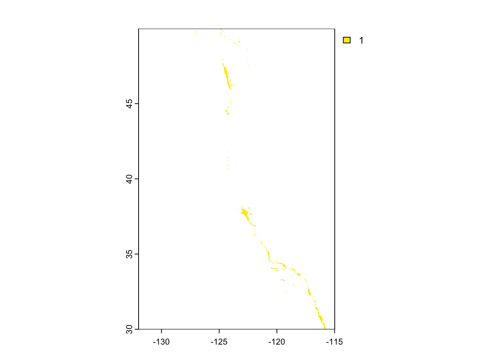

── Conflicts ────────────────────────────────────────── tidyverse_conflicts() ──
✖ tidyr::extract() masks terra::extract()
✖ dplyr::filter() masks stats::filter()
✖ dplyr::lag() masks stats::lag()
ℹ Use the conflicted package (<http://conflicted.r-lib.org/>) to force all conflicts to become errors
library(here)
here() starts at /Users/ianmorris/Documents/UCSB/Fall/eds223-spatial/hw4-imsibaja
library(tmap)
Breaking News: tmap 3.x is retiring. Please test v4, e.g. with
remotes::install_github('r-tmap/tmap')
library(kableExtra)
Attaching package: 'kableExtra'
The following object is masked from 'package:dplyr':
group_rows
Check if CRS of each dataset are equal, update if not
if(sf::st_crs(WC_EEZ) == sf::st_crs(4326)) {print("Coordinate reference systems match")} else{warning("Updating coordinate reference systems to match")# transform data to match WC_EEZ <- sf::st_transform(WC_EEZ, st_crs(4326))}
[1] "Coordinate reference systems match"
Check if CRS of each dataset are equal, update if not
if(terra::crs(bath) == terra::crs("EPSG:4326")) {print("Coordinate reference systems match")} else{warning("Updating coordinate reference systems to match")# transform data to match bath <-project(bath, crs("EPSG:4326"))}
[1] "Coordinate reference systems match"
Check if CRS of each dataset are equal, update if not
if(terra::crs(SST_stack) == terra::crs("EPSG:4326")) {print("Coordinate reference systems match")} else{warning("Updating coordinate reference systems to match")# transform data to match SST_stack <- terra::project(SST_stack, crs("EPSG:4326"))}
Warning: Updating coordinate reference systems to match
Process data
###Next, we need to process the SST and depth data so that they can be combined. In this case the SST and depth data have slightly different resolutions, extents, and positions.
Find the mean SST from 2008-2012 (e.g. create single raster of average SST)
SST_mean_K <- terra::mean(SST_stack)
convert average SST from Kelvin to Celsius hint: subtract by 273.15
SST_mean_C <- SST_mean_K -273.15
crop depth raster to match the extent of the SST raster
bath <- terra::crop(bath, SST_mean_C)
note: the resolutions of the SST and depth data do not match resample the depth data to match the resolution of the SST data using the nearest neighbor approach
bath <- terra::resample(bath, SST_mean_C, "near")
check that the depth and SST match in resolution, extent, and coordinate reference system hint: can the rasters be stacked?
if(all(terra::res(bath) == terra::res(SST_mean_C))) {if(terra::crs(bath) == terra::crs(SST_mean_C)) {if(terra::ext(bath) == terra::ext(SST_mean_C)){print("All match") }else{stop("extenet does not match") } }else{stop("CRS does not match") }}else{stop("Resolution does not match")}
[1] "All match"
SST_bath_test <- terra::rast(c(SST_mean_C, bath))
Find suitable locations
reclassify SST and depth data into locations that are suitable for oysters hint: set suitable values to 1 and unsuitable values to 0
# Perform the operation: Both cells equal to 1suitable_loc <- (SST_mean_C_rcl*bath_rcl)plot(suitable_loc)

Determine the most suitable EEZ
We want to determine the total suitable area within each EEZ in order to rank zones by priority. To do so, we need to find the total area of suitable locations within each EEZ.